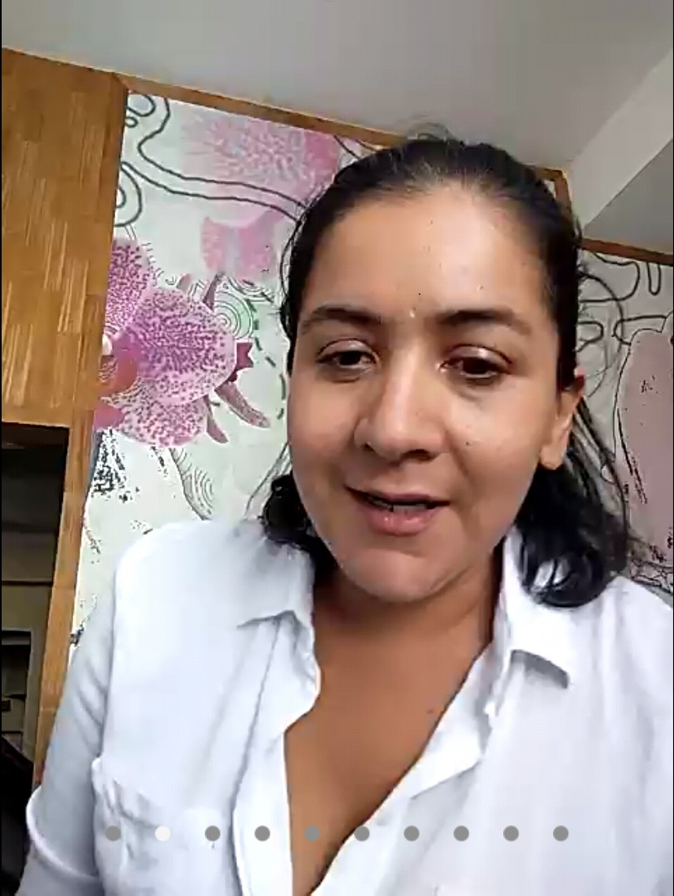
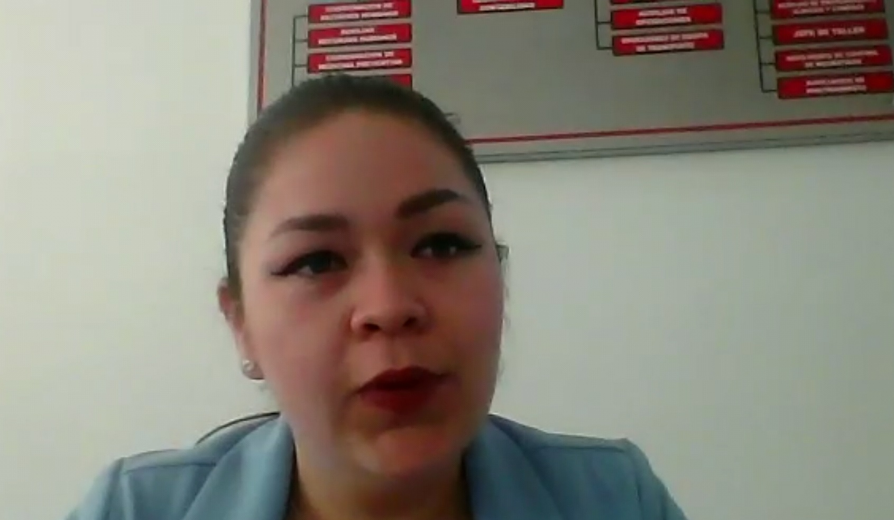

Por donde podre empezar, a si ya se, la presentante de nombre ISC.Yahaira Torres Romero comenzo con una frase en donde hacia referencia a que cualquier cosa puede ser útil siempre y cuando haya imaginacion y necesidad, en un principio me parecio bastante escueta y fuera de lugar puesto que el tema trataba de retos y no de necesidades, que sorpresa me lleve puesto que en si todo el foro era un tema muy compuesto y la frase si bien sin contexto al principio, este lo tomaria mas adelante y seria inclusive la "piedra angular" del tema.
El contenido del tema fue abordado por 2 piezas clave, no hablo de los expositores y motivadores, sino, me refiero al poder de la empatia, puesto que colocarnos en el lugar de los expositores hace darnos cuenta de lo que tuvieron que pasar los locutores de su vida y que esta a su vez no esta muy alejada de lo que nosotros podemos y podremos vivir o sufrir, en cuestion de cada mente. Y el segundo es como no, el factor dejabu, o, mejor dicho, sentir que lo que vivimos en el momento o escuchamos ya lo hemos hecho antes.
Sepan que mi imaginacion y capacidad de criticar antes de ver me cego, debido a los tiempos que hoy vivimos y a lo que conocemos como cultura, lo que vemos en la TV y directa o indirectamente en las redes sociales sobre lo autodenominado "feminismo", provoco en mi, el repudio a todo lo que tuviese que ver con el empoderamiento y superacion de la mujer, ojo, no es que me incline al odio a la mujer, todo lo contrario, lo que paso es que la saturacion del tema ha provocado en mi la mala propiedad de juzgar todos estos temas antes de que se me presenten, cuento esto por el motivo que mas adelante expondre.
Fue una sorpresa que me emociono y me dio una nueva perspectiva sobre el verdadero significado de superacion (no tan grande, solo un enfoque nuevo) sobre la superacion y desarrollo como persona, me parecio demasiado correcto y muy acertado que el tema de la desigualdad de genero no fuese abordada tal y como nos tienen acostumbrados los medios, un respiro de aire nuevo que las mujeres presentes hablasen del tema de la discriminacion de genero como algo minimo y no tan extremista como se nos cuenta, claro reconocieron ciertas conductas de sus compañeros hombres que hacia que ellas pensaran y se sintieran en sierto modo menospreciadas, y recalco que ellas lo sintieron mucho antes de la explocion mediatica del feminismo. Todos los presentes del foro dijimos o tal vez pensamos -"Gracias a dios que no se pusieron a hablar de la oprecion y de que les pagan menos" (Que le paguen menos a una mujer desde mi punto de vista es absurdo, ya que si asi fuese las empresas solo contratarian a las mujeres por ser estas mas rentables, ¡pero que coincidencia que seamos mas los hombres en las empresas no!).
La primera expositora tiene como nombre Janet Chacón, la misma nos hablo de su vida en el ambito del emprendimiento y desarrollo laboral, alumna del CETIS no 62 (esto me provoca nostalgia puesto que yo soy estudiante de la misma escuela). Recalco que nunca se sintió diferente, esta menciona que no encontró diferencia entre ella y el resto de sus compañeros hombres, trabajando primeramente en General Electric por un tiempo, aprendio diversas cosas y observo diferentes problemas a que se veían en la empresa (lo que en un futuro seria el catalizador que la impulso a desarrollar su propia empresa), cuando decidio buscar un nuevo camino nos comento que, trabajo 6 meses en una empresa invitada por uno de sus amigos, siendo dueño de esta misma pero que en la cual desventajosamente no tuvo tanto éxito, por lo que estuvo saltando de trabajo en trabajo durante un tiempo que no nos comento su duracion.
hablo que su pasion por el emprendimiento, pero en ese momento reconocio que no lo sabia aplicar en lo laboral, motivo que la impulso al estudio una maestría para así prepararse mas y tener incluso una perspectiva nueva. Tuvo varios retos en su comienzo, no vio des ventoso el ser una mujer y siguió con su desarrollo laboral, incluso cuando llego a ser madre no se dio por vencida viendo lo mejor que le reparaba el futuro sin ver a los demás con ojos de envidia o grandeza, (ya se la saben lo mismo que todos los que estan en su zona de confort dicen de su vida).
La segunda expositora era Monserrat Vargas, la cual es el segundo caso de emprendimiento exitoso, un claro ejemplo de lo que puede llegar a ser cualquier estudiante. Ella estuvo un poco mas preparada para la conferencia, haciendo uso de diapositivas las cuales nos enseñaron acerca de la  empresa a la cual ella rinde su trabajo y del puesto que tiene. Nos presento su vida y nos comenzó a platicar sobre su experiencia de la vida, su experiencia escolar y finalmente laboral. Tal parece que todos los que logran el emprendimiento van por el mismo camino, tienen como recuerdos de la misma vivencia, etc. … Pero a su ves ella tambien tiene clara diferencia que la hace diferente, nos comento su primera experiencia laboral como algo malo, puesto que tuvo problemas debido a que segun ella en sus propias palabras “no tenia el nivel”, se defraudo de si misma en ese momento, pero siguió y siguió hasta encontrar su trabajo definitivo hasta el momento, el desecho de quimicos basura, lo que en primera instancia seria algo unico para hombres. Lo que sigue es que hablo solo sobre su trabajo…
Es claro que para mi esto fue bastante interesante, no es un foro tan recto, presenta curvaturas que en si, lo hacen mas vistoso, no es de un solo color y cuenta con matices, recuerdan que esa frase que consideraba impropia del tema tendria importancia dentro de este tema, ahora les dire como es que la frase tiene su lugar. Esta tiene una posicion que la galardona como la semilla de lo que en futuro sera un arbol, analogando en el tema entonces el contenido seria las raices y lo expuesto como perspectiva el follaje del arbol. Si son buenos observadores, tal parece que las raices no dan el ancho para un follaje tan extremos, pero esto no es tan necesario, la reseña se puede mantener por si sola, y las raices solo estan como estructura que da pie a todo lo que cierne encima de ellas, quiero decir que en opinion propia, no es el contenido del tema el que realmente luce y del que se tiene que hacer elucion en la vida real, sino como lo qui expresado, es todo aquello que nos deja en enseñanza y no en literatura, todo lo que nos deja como respuesta y duda propia y no las dinamicas y en general lo que uno entienda sobre esta ultima (recalcando que esta es una reseña subjetiva en la que mas de uno puede discernir y pensar algo parecido pero por diferente camino.)
Muy buen contenido, excelente frase, mas que extraordinaria la enseñanza, son estos los frutos de aquel arbol al que se hacia elucion, asi de sencillo puede uno concluir pues todas las bases y argumento ya han sido expuesto y presentados, todas las cartas estan en la mesa y lo que pareciese ser una perdida de tiempo se reconsidera y se revalua como una moneda una vez conociendo el trasfondo que llevo a tales resultados. Mi nombre es Reyes Razo Ruben y puedes hacer o tener tus propias conclusiones pero de mi a ti lector, mas que excelente exposicion la que presencie.